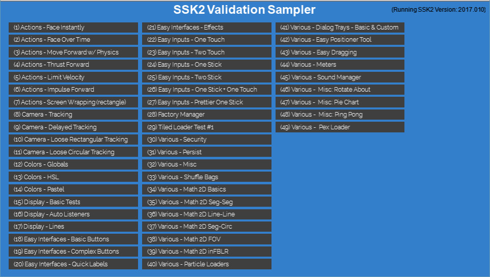

Super Starter Kit 2
 SUPERCHARGING Corona SDK game development every day. Get It Now!
SUPERCHARGING Corona SDK game development every day. Get It Now!

(Latest Release: 2017.006)
(Last Docs Update: 15 JAN 2017 @ 1300 PST)
What Is It?
Super Starter Kit 2 (aka SSK2) is a collection of libraries and utilities designed to take your Corona SDK development experience to a whole new level of efficiency and speed.
SSK2 is the culmination of over five years of programming effort and as such acts as the foundation for all of my projects. I think you should make it your foundation too.
~ The Roaming Gamer
| Globals | Variables & functions (optionally) added to the global namespace to speed up and simplify coding. |
| Extensions | Adds 60+ new and improved features to: display.*, io.*, math.*, string.*, table.*, transition.* |
| Light+Pro | Libraries that I quite honestly cannot develop without: (Improved) Display Object Factories, Quick Layers, Easy Interfaces, 2D Math, Collision Calculator, Actions Library, Colors, (Scene) Camera Library, System Variables & Flags |
| Pro-Only | Additional Display Object Factories, Android Helpers, Persistent Data, Points Library, Simple Security, Social Helpers, Shuffle Bags, and the Sound Manager |
| External | A few libraries by folks that I find useful. (Appropriate licenses listed and included.) |
Lite vs. Pro - Why Two Versions?
In order to best fit the needs and abilities of the community, there are two versions of SSK2:
- Lite - This version contains what I consider to be the "Can't develop without it!" parts of SSK2.
- On sale till January 5th 2017 for $12!
- Pro - Lite + many additional solutions to problems encountered by the Pros.
- On sale till January 5th 2017 for $32!
Where Can I Get SSK2?
| Sellfy | GumRoad | Corona Marketplace | itch.io |
| soon... | soon... | soon... |
(You can also see my full list of products on RG Docs.)
Installing SSK2
To use SSK2, simply:
- Copy the ssk2 folder and its contents to the same folder as your main.lua file.
- Add this to main.lua at or very near the top of the file:
require "ssk2.loadSSK"
_G.ssk.init()
Tip: SSK2 adds extra features to Lua and Corona so it is best to initialize it prior to requiring any other libraries or modules.
Configuring SSK2
The initialization example shown above uses the default settings for SSK2. You may want to change that.
ssk.init() takes an optional table of key-value pairs { key1=value1, ..., keyN=valueN } that allows you to configure the myriad options SSK2 provides.
Configuration Settings:
- debugLevel (
0) - Values higher than 0 turn on debug messaging in SSK2 modules and libraries.- Valid range: [0, 2]
- exportCore (
true) - If set to true, SSK2 'exports' a number of values into the global (_G) namespace.- See SSK Globals for more details.
- exportColors (
true) - If set totrue, SSK2 'exports' a number of color values and functions into the global (_G) namespace.- See SSK ssk.colors.* for more details.
- exportSystem (
false) - If set to true, SSK2 'exports' a number of values into the global (_G) namespace.- See ssk.system.* for more details.
- gameFont (
native.systemFont) - SSK2 uses a 'default' font for buttons and some other features. You can specify that default font by providing the name of a validttforotffile in this setting. - launchArgs (
nil) - Takes the value...which is only available in main.lua. If provided it is used to further refine SSK2 settings based on what Corona has discovered about the current 'device' and passed on to your app in the launch args. - math2DPlugin (
false) - If set totrue, SSK2 will try to use the native math2d instead of the built-in Lua-only version. If it cannot find the plugin, it will safely fall back to the Lua version. - measure (
false) - If set totrueSSK2 will dump a listing of each library name and size to the console. - useExternal (
false) - If set totrueSSK2 will load external libraries.- Tip: This content must be downloaded first!
Example
_G.ssk.init( { launchArgs = ...,
measure = true,
gameFont = "Raleway-Light.ttf",
math2DPlugin = true,
debugLevel = 2 } )
Validation Sampler
As time proceeds, there will me more and more free and paid content available using SSK2... but for now you can take a look at the Validation Sampler that comes with SSK2.
You will find the Validation Sampler in the ZIP-file you downloaded under ~/validation.
To run the sampler, do the following:
- Copy the
ssk2/folder (and all its contents) into~/validation/. - Open main.lua in the SIMULATOR. This will display a menu of samples you can run.
- Click on any sample button to run that sample.
- Re-load simulator (CTRL+R or CMD+R) to see the menu again.
(Although it will work, the sampler is not designed to run easily on a device. i.e. You will need to quit the app to run a new sample.)

Metrics
For those folks who love metrics (admit it, you do), here are a few interesting details about SSK2.
Lines Of Code & Comments
Counting with cloc I get these metrics:
-------------------------------------------------------------------------------
Language files blank comment code
-------------------------------------------------------------------------------
Lua 68 2398 2580 10836
-------------------------------------------------------------------------------
Memory Footprint
A measurement of memory used per-library and in total:
--------------------------------------------------------------------------
-- Initalizing SSK
--------------------------------------------------------------------------
ssk2.core : 7 KB
ssk2.extensions.display : 1 KB
ssk2.extensions.io : 7 KB
ssk2.extensions.math : 5 KB
ssk2.extensions.native : 3 KB
ssk2.extensions.string : 13 KB
ssk2.extensions.table : 24 KB
ssk2.extensions.transition : 3 KB
ssk2.system : 2 KB
ssk2.android : 1 KB
ssk2.colors : 16 KB
ssk2.security : 9 KB
ssk2.persist : 2 KB
ssk2.math2d : 12 KB
ssk2.cc : 6 KB
ssk2.points : 4 KB
ssk2.actions.actions : 22 KB
ssk2.soundMgr : 15 KB
ssk2.easyDisplay : 51 KB
ssk2.easyIFC : 121 KB
ssk2.easyInputs : 70 KB
ssk2.easyCamera : 12 KB
ssk2.easySocial : 2 KB
ssk2.misc : 44 KB
ssk2.shuffleBag : 4 KB
ssk2.meters : 7 KB
ssk2.external.mydevelopers.autolan.client : 26 KB
ssk2.external.mydevelopers.autolan.server : 23 KB
ssk2.external.proxy : 1 KB
ssk2.external.wait : 2 KB
ssk2.external.randomlua : 7 KB
ssk2.external.30log : 5 KB
ssk2.external.portableRandom : 4 KB
--------------------------------------------------------------------------
SSK Total : 529.86 KB
--------------------------------------------------------------------------
Tip: While I find it useful to have all parts of SSK2 present during development, I sometimes remove elements I'm not using during production.
To teach you about this, I will be soon write an article called: SLIMMING DOWN SSK2
~ The Roaming Gamer
Help!
Don't Panic
Are you having a problem with SSK2? If so, don't panic.
I regularly update SSK2 and its co-products. Most of the time problems can simply be traced back to not having the most up-to-date version of SSK2.
Are You Using The Latest Version?
Add this code at the end of main.lua
print( "SSK VERSION: " .. ssk.getVersion() )
If this prints out SSK VERSION: 2017.006 you have the latest version.
If not, then go download a new copy from your store page.
Tip: While you are checking, be sure to check that your co-products are up-to-date too.
Are You Getting Errors?
Did you get an error dialog, or are you seeing error/warning message in the console?
If so, read them and see if you have made a mistake on the line indicated.
If you think its me and not you, post a question in the forums. (See Posting Questions To Forums below.)
Are you typing ssk2?
You may have noticed that while this is called SSK 2, I still use the old naming convention ssk.someFunction() in my samples.
"Why," you ask?
I am a lazy coder and proud of it. Even one extra letter is too much repetetive typing for me. Also, I'm and old dog, and as the saying goes, "You can't teach an old dog new tricks."
So, if you have been doing this: ssk2.someFunction(), get rid of the 2 and you will be good to go.
SSK2 ~= SSK Legacy
This is the guide for SSK2. If you are trying to use Legacy SSK and following this guide... well many things have changed. Please consider getting SSK2.
Get SSK2 Now! It will be worth every penny! ~ The Roaming Gamer
Posting Questions To The Forums
I will be providing help (exclusively) through the Corona SDK Forums. (Sorry: Direct e-mails and private messages will not be answered.)
When posting a question in the forums, be sure to follow these guidelines:
- Post to this forum: https://forums.coronalabs.com/forum/553-other-third-party-tools/
- Make sure the title starts with: SSK2 and includes a short and meaninful name for the the problem.
- Example Title:
SSK2: newImageRect() Paint Fill Parameter Not Working
- Example Title:
- In the body of the post tell me all of the following:
- Versions / Environment / Target
- Version of SSK you are using.
- Version of Corona SDK you are using.
- OS you are developing under.
- Where you are encountering the issue (Simulator(s) and or Device(s)).
- Error Message(s) (If Any)
- Error messages (put them in a code block for legibility)
- Summary Of Problem
- What you are trying to do.
- What you expected to see.
- What you saw instead.
- Why you think this is wrong (if there is no explicit error message.)
- Help Thyself
- Tell me what debugging steps you have tried.
- Versions / Environment / Target
Be clear, concise and precise.
The more effort you put into your post, the better I will be able to help you.~ The Roaming Gamer
Change History
2017
2017.005
lite + PRO
- Critical fix to ssk.math2d - Added two missing functions/dependencies.
- Added ssk.misc.addSmartTouch( obj, params ) - Adds a touch handler that will work in all setups.
- Added ssk.misc.addSmartDrag( obj, params ) - Adds a touch handler that gives the object a drag-n-drop ability.
- Added ssk.misc.addPhysicsDrag( obj, params ) - Adds a touch handler that gives the object a drag-n-drop ability using physics.
2017.005
PRO-only
- Added Easy Positioner Tool/Module
- Added First Version of Tiled Loader
lite + PRO
- Added First Version of Factory Manager
- Added 'custom' dialog tray factory.
- Added forEach() as table.* extention
- Added forEachi() as table.* extention
- Added optional locked image/rect to buttons library (2/3/4 state button)
- Added optional toggled image/rect to buttons library (2/3/4 state button)
- Updated 'ignoreList' to allow it to gracefully handle 'nil' objects.
- Updated ssk.misc.getImageSize() to more nicely handle bad path.
2016
2016.001 .. 2016.004
- Initial Releases
 Copyright © Roaming Gamer, LLC. 2008-2016; All Rights Reserved
Copyright © Roaming Gamer, LLC. 2008-2016; All Rights Reserved